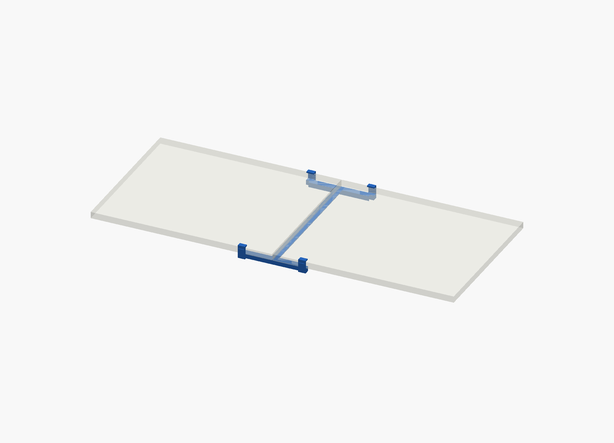
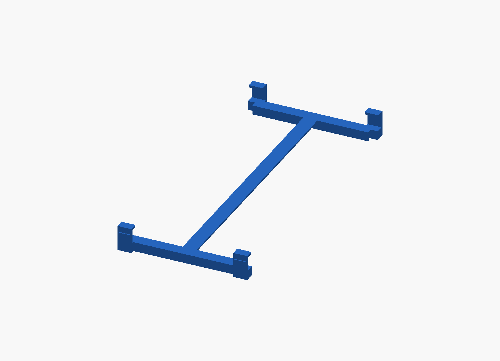
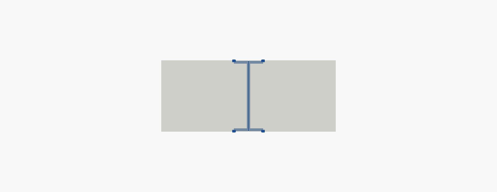
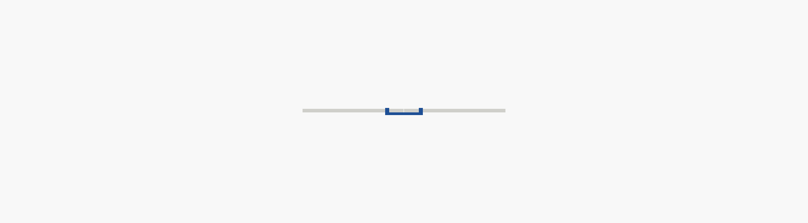

Parametrisk konceptmodel for en skrueløs forstærker til det klassiske sammenklappelige festivalbord — monteres under bordpladens midtersamling, hvor bordet normalt knækker.
Forstærkeren er en H-ramme: to rails (hver 300 mm) rækker 150 mm ind på hver bordplade-halvdel og er forbundet af en tværbjælke, der løber hele bordets bredde. Et galvaniseret stålbånd er støbt ind i hver rails overflange for bøjningsstivhed. For enden af hver rail griber en vippelås-klo fat om bordpladens lange kant — fire kloer i alt, placeret symmetrisk om midtersamlingen.
Mekanikken er bevidst et splejse-princip, ikke en ren snap-fit: fire kant-forankrede klemmer giver et reelt kraftpar om samlingen, hvor bordets eget hængsel ikke kan optage bøjningsmoment. Se chatten for den fulde mekaniske begrundelse.
Sammenlignet på tværs af Bauhaus, Jula, Gardeon og Trigano (alle "180 cm fold-i-midten"-modeller). Designet er lagt midt i det fælles spænd.
| Mål | Markedsspænd | Brugt i design | Kilde |
|---|---|---|---|
| Længde (åbent) | 1800 mm | 1800 mm | Alle |
| Bredde | 740–760 mm | 740 mm | Bauhaus, Gardeon |
| Bordpladetykkelse | 25–40 mm | 32 mm | Trigano 40, Gardeon 35 |
| Halvdel-længde | 900 mm | 900 mm | 1800/2 |
| Vægt, komplet bord | 11–16 kg | — | Bauhaus, Trigano |
| Del | Mål | Status |
|---|---|---|
| Rail-længde (pr. halvdel) | 150 mm | designvalg |
| Rail-bredde / -højde | 30 × 24 mm | designvalg |
| Vægtykkelse, kanal | 4,5 mm | designvalg |
| Stål-indlæg | 20 × 3 mm | designvalg |
| Afstand til kant (inset) | 20 mm | designvalg |
| Luft ved midtersamling | 4 mm | antagelse |
| Kant-profil / "læbe" under pladen | — | ikke i specs |
De to sidste rækker er ikke offentliggjort af nogen producent — de er ingeniørmæssigt rimelige antagelser, ikke mål. De skal verificeres ved at vende et fysisk bord om, før der skæres værktøj.
Simplificeret af at produktet er engangsbrug: ingen krav om UV-holdbarhed over år eller tusindvis af spænde-cyklusser — kun én montering og ~8 dages statisk last.
Stiv og slagfast nok til bøjningslasten uden UV-stabilisator — bruges kun i 8 dage.
Almindelig stål er nok — ingen grund til fjederstål, da delen ikke skal holde til gentagne cyklusser.
Tool-free kvart-vip giver reelt klemtryk — langt stærkere end en ren snap-tap.



